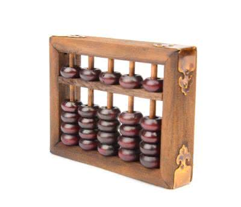
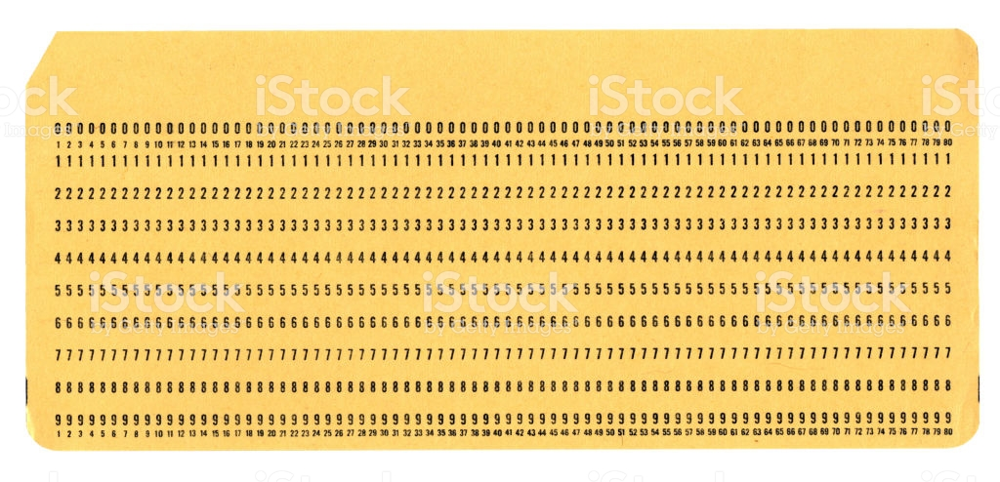
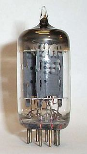
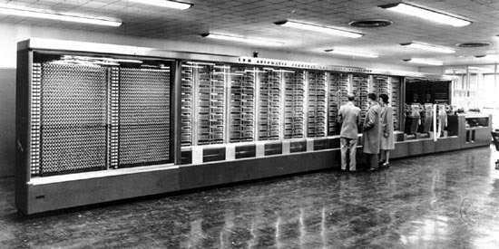

Tudo começou com o ábaco, foi desenvolvido de uma forma independente por vários civilizações, sendo assim, um dos primeiros registros foram surgido na china por volta de 3000 a.c
Apesar de terem usado o Ábaco na época existia também os Cartões perfurados, esses furos que existem no cartão a máquina realiza diferentes ações essa tecnologia foi desenvolvida em 1801 para a automatização dos teares têxteis por Joseph-Marie Jacquard
Depois da guerra mundial os computadores foram baseados em interruptores electromecânicos, 1943 foram criados as válvulas de vácuo aos computadores permitindo substituir os anteriores interruptores, porém em 1948 com a invenção do transistor, muito embora o transistor que revolucionou os computadores apenas tenha sido inventado em 1952
Durante a segunda guerra Mundial foi criado um computador de nome 23 desenvolvido pela Alemanha Nazi, os aliados que desenvolveram outro computador com a mesma tecnologia deu o nome de Mark 1. Mark 1 era um computador enorme que tinha cerca de 17m de comprimento, 2.4 de altura, e 5 tonelada de peso ela consumia muitíssima energia e era muito lento , com essas características levaram que fossem necessários novos desenvolvimento de outros computadores, sendo assim construíram a Válvula de Vácuo
